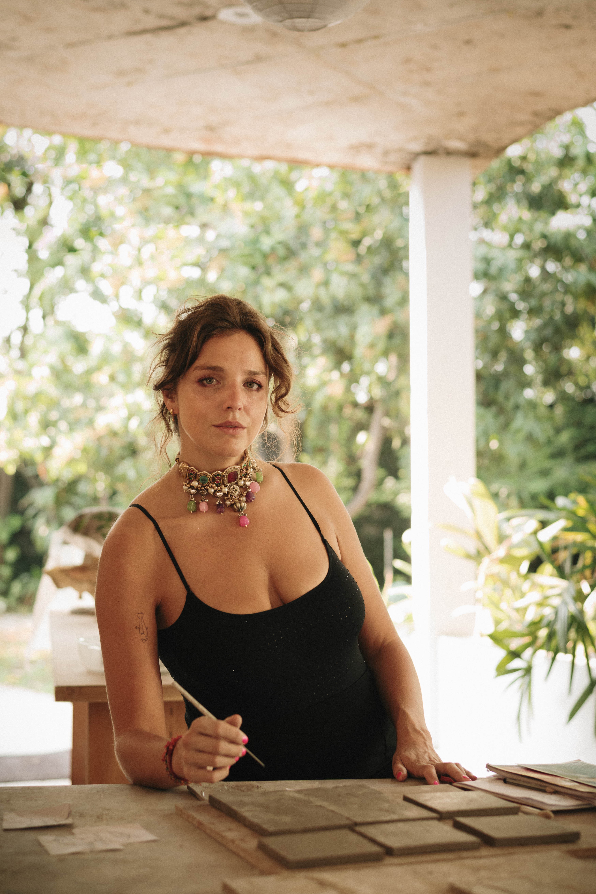
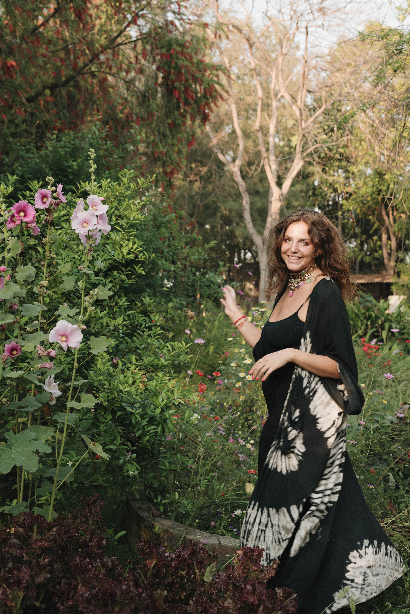

Executive coach, thinking partner, and clay wellness practitioner. Available for podcasts, speaking engagements, interviews, and workshops. London · Berlin.

Upload isabel-kennedy-press.jpg'" />Isabel Kennedy · London
Isabel Kennedy is an executive coach, thinking partner, and clay wellness practitioner working with senior leaders, founders, and teams from London and Berlin.
A decade as a global executive headhunter — 10,000+ hours of interviewing C-suite and near-C-suite leaders across life sciences and pharmaceuticals — gave Isabel an unusually granular understanding of how exceptional people think, where the gaps are, and what it takes to work with both.
She is the creator of the Kennedy Wiggle — a body-based framework for accessing the intelligence that precedes rational thought. The Wiggle runs through all her work: executive coaching, clay wellness sessions, and corporate team experiences.
Alongside her coaching practice, Isabel runs Fishy Ceramics — a ceramics practice making handmade lamps and bespoke tile commissions from Studio Pottery London. She is a triathlete, a ceramicist, and has spent time in ashrams and studios from the Himalayas to West London. That breadth is not background colour. It is the work.
She is currently writing #20daysof — a book about presence, noticing, persistence, and performance.
"Working with Isabel has been the best. I never imagined that a couple of hours of 'making room' could have this impact — we could grow as a team, and for ourselves, in such meaningful ways."Carmen Jenny · Co-Founder & CMO, Scripe.io · Forbes 30 Under 30

Upload isabel-kennedy-speaking.jpg'" />Workshop · London
High-resolution headshots and biography available on request. Please allow 48 hours for asset delivery.
Request assets →